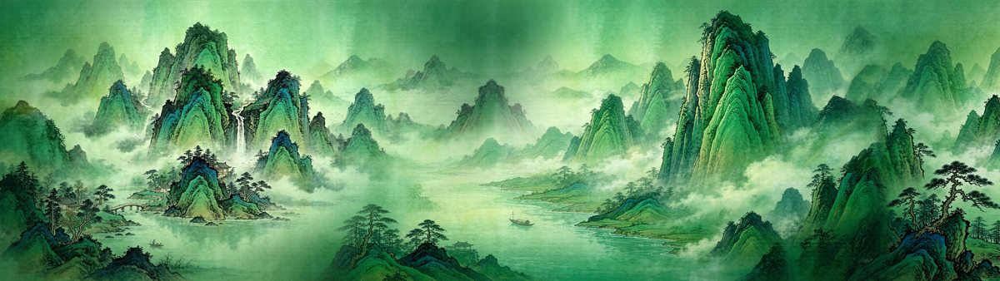
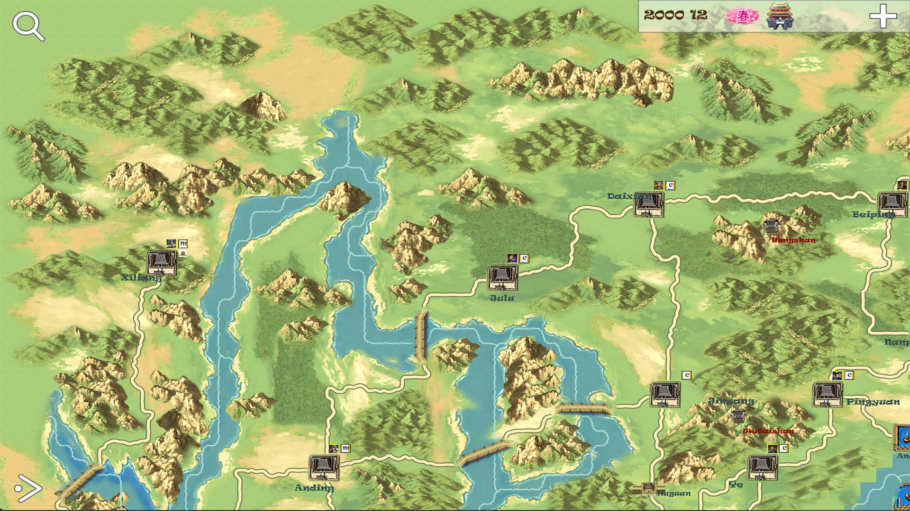

Development codename · Early development
Sanguo3D
Painted mountains. A new dimension.
A new Three Kingdoms world in 3D, shaped by blue-green mountain landscapes. Passes, cities and rivers belong not only in the painting, but in your strategy.

01 · The project
Painted mountains. A new dimension.
Sanguo3D is a new 3D Three Kingdoms project exploring a distinct historical strategy experience. It is separate from the SanguoSeason renewal, with room to make blue-green landscape painting its main visual language.
Layered ridges, rivers, and settlements suggest a world that can be read in three dimensions without depending on photorealism. The final art direction is still evolving; the images here are reference paintings and earlier studies, not released gameplay.
Sanguo3D is only the current development codename, shown in Chinese as 三国3D. The project is still at an early stage, and its final title has not been decided.
02 · Reading room
Understanding the Three Kingdoms
The Three Kingdoms setting brings together Wei, Shu, and Wu, the rival states that emerged at the end of the Han dynasty. Knowing the difference between historical records and later storytelling helps make sense of the world behind the game.
A short introduction to the Three Kingdoms
SeasonTree’s earlier maps offer lessons in clarity: a mountain pass should be readable, a route traceable, and a city recognizable. The shared visual essay follows these references alongside the classic’s Gusu heritage.
03 · Workshop
Shaping the new world
The immediate focus is the new 3D Three Kingdoms project, refining the relationship between terrain, settlements and interface. A landscape should reward the eye without getting in the way of strategic decisions.
Creators takes a related strategy direction into an imagined, culturally neutral setting, focused on player-led building. Ming is a longer-term historical project that can reuse the technical architecture. Neither should be mistaken for a released Sanguo3D mode or expansion.
The technical foundation may be shared; the world, research, and project identity are not interchangeable.
04 · Sanguo3D
Downloads & availability
No public test URL or release date is announced here yet. Earlier SeasonTree packages are not releases of Sanguo3D. A verified test entry will be added below when available.
3D test build
No public test URL is listed here yet. The landscape studies on this site are not footage from a released 3D game.
Test link not yet listed